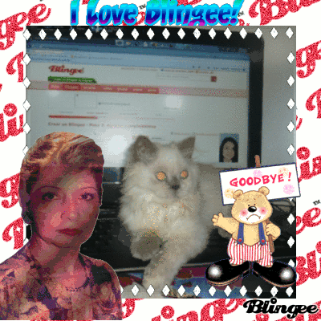

Today we gather to remember celebrate and remember the life of Blingee.com (2006-2021).
Known as "Blingee" by their friends, Blingee was a website that allowed users to digitally decorate and personalise their images, then share them with friends.

How did Blingee work?
Blingee was created in 2006 by Bauer Teen Network, at this time Adobe Flash Player was used by a lot to make websites interactive.
To make a Blingee, users uploaded their own images into the editor and added “stamps”, animated transparent GIFs from their own library as well as uploads from other Blingee users.
This diagram attempts to map the workflow of creating a Blingee.
Many stamps were made and exchanged among users for them to be used
again, so each Blingee was often built from shared graphic material.
Blingee loved bringing people together.
Blingee loved family!
Some say Blingee was "Stupid"
In Olia Lialina's blog, "One Terabyte of Kilobyte Age", she describes Blingee as a “stupid” tool, borrowing from the idea of “stupid networks”: systems that stay open, simple and not overly controlling.
Lialina writes "Blingee did not restrict what a stamp could be. It did not have to be glitter, and it did not have to be animated. Although Blingee started as a tool for decorating photos, users could also use it as image-processing software, a collage tool, or a way to work with layers".
This kind of stupidity feels increasingly rare in 2026. It is important we remember Blingee for trusting users with their own images.
Real Blingees by Real People
Before we continue, we pause to look at Blingees made by real users. These are not just decorative examples. They are traces of people using the web as a place to make images feel alive.




Fond Memories of Blingee
M.I.A.’s 2010 music video for XXXO lives close to Blingee’s visual world.
The lyrics “If you like what you see, you can download and install” and “you want me to be somebody who I’m really not” feel especially interesting alongside the blingy, internet-heavy imagery.
The diamante frames, swans-swimming gifs, and moving hearts bejewel her footage. Perhaps a comment on the transformation media undergoes in an age where you really can download and install.
{kind=link}